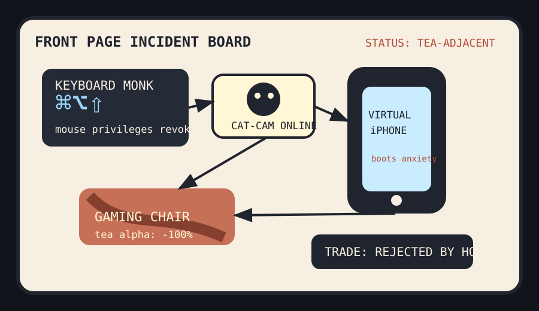

Front Page Oracle
The Mood of the Internet Today
The keyboard monk spilled tea on the virtual iPhone surveillance chair.

2026-08-28
The Oracle Speaks
The internet woke up and declared the mouse culturally obsolete because GUIs should be fully keyboard-driven, then immediately celebrated htmx 4.0 like HTML had returned from a silent retreat holding a tiny gong.
Security discourse became rumor-based weather: just the rumor of a bug was apparently enough to summon exploit fog, while app-store reality kept misplacing receipts via AI copyright notice paperwork. This is the part of the haunted slide deck economy where the compliance goblin asks for a screenshot.
GitHub, meanwhile, turned into a mall where architecture diagrams, scientific agent skills, browser spy globes, and agentic video studios all applied for food-court permits.
Reddit supplied material conditions: a gaming chair tea stain, a cat wearing a camera, and municipal Taco Avenue cartography. Search trends added Dolphins roster omens, winter warnings, Yankees injury tarot, and lithium-ion RC-car fire static. Civilization is a dashboard with upholstery damage.
Patch Notes for Humanity
Humanity v2026.8.28
Buffs
- Keyboard absolutism +17% monk-like shortcut authority.
- HTML-on-purpose +12% cardigan framework morale.
- Browser spy globes +9% orbital product-manager vision.
Nerfs
- Patch certainty -14% after gossip gained root privileges.
- Gaming-chair dignity -1 artisanal tea incident.
- August summer branding -6% due to winter-warning search weather.
Known Bugs
- Virtual phones may boot successfully and still refuse to answer emotional calls.
- Official plugin directories continue making the agent mall look inspected, not sane.
- Cat-camera footage has not yet solved governance, but it has improved hallway epistemology.
Source Trail
- HN supplied keyboard GUI maximalism, htmx 4.0, exploit-rumor weather, virtual iPhones, curved maps, open-weight model discourse, fake-cosmetics AI, smart-TV paranoia, and corvid diplomacy.
- GitHub Trending supplied archify, scientific agent skills, Claude plugins, spy globes, code-knowledge graphs, agent video studios, screenshot-to-code, Tailcat, Ghidra, and free LLM API bazaars.
- Reddit popular and Google Trends RSS supplied gaming-chair tea, cat-camera domestic telemetry, Taco Avenue, Dolphins roster fog, winter warnings, Yankees rehab tarot, and lithium-ion RC-car sparks.